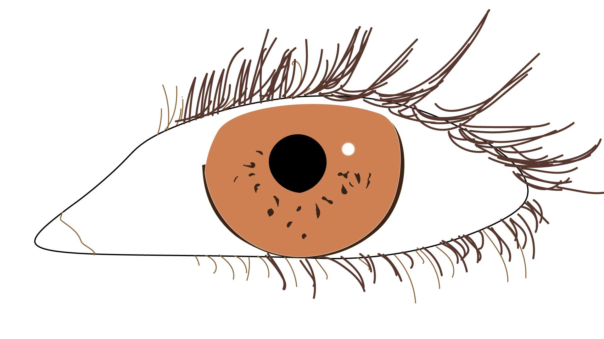
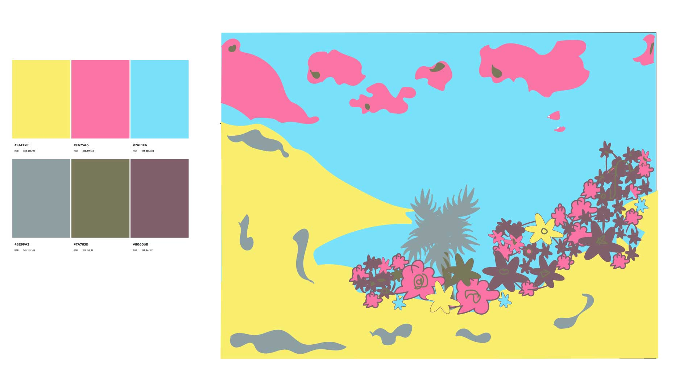

I created an eye illustration using Adobe Illustrator with basic shapes and the pen tool. I built the eye using simple forms and focusing on conveying a steady, soft gaze as the main emotion. I chose a more realistic style and used an amber-brown for the iris to create a warm feel. I used a wide, rounded iris and a relaxed eyelid line to convey a sense of calm observation. Additionally, I used tools like smart guides to keep the design well aligned. Finally, I exported my final work as a JPEG for web use.

For my Illustrated environment, I chose a real photograph of a beach with flowers. I made sure to lock that layer so that I could draw on top of it. I also separated my illustration into foreground, middle ground, and background layers to help me manage my details. My color palette followed a triadic scheme, meaning I used three main colors along with their corresponding variation. When coloring, I incorporated different colors into the flowers to make the illustration more interesting. This forced me to keep it simple and rely on shapes, while avoiding image trace and manually building the environment with the pen tool and shapes. When I finished, I exported the final illustration as a 1920x1080 JPEG and had it exported for screens.